| Jezik | Language | Title | |||
|---|---|---|---|---|---|
| Srpski latinica | Serbian Latin | Mali princ | 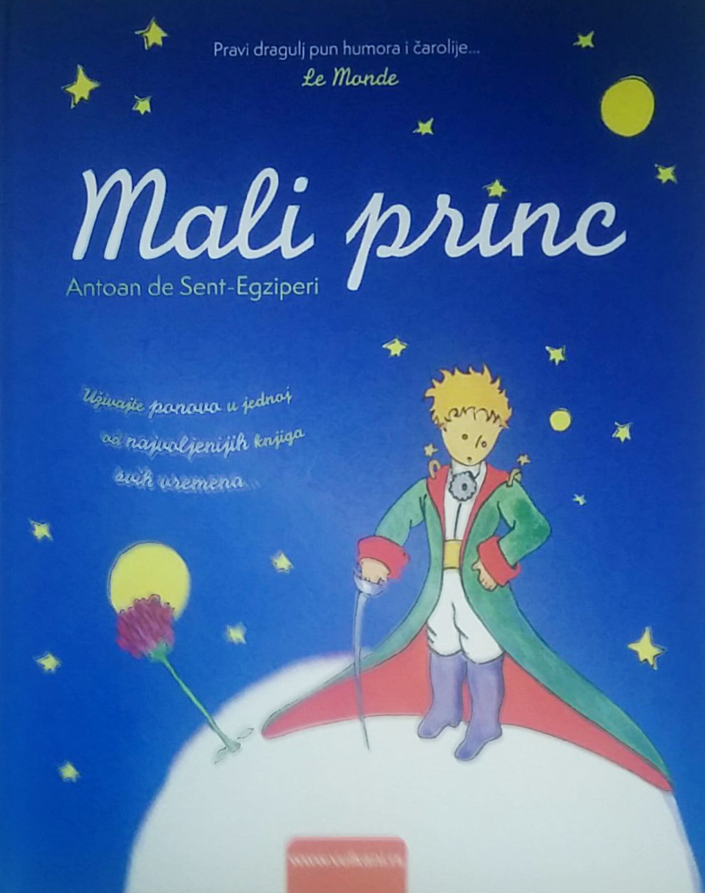 | 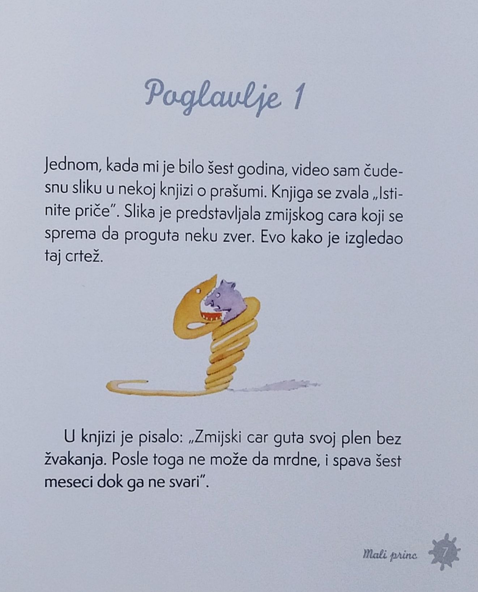 | |
| Srpski ćirilica | Serbian cyrilic | Мали принц | |||
| Srpski ćirilica | Serbian cyrilic | Мали принц | 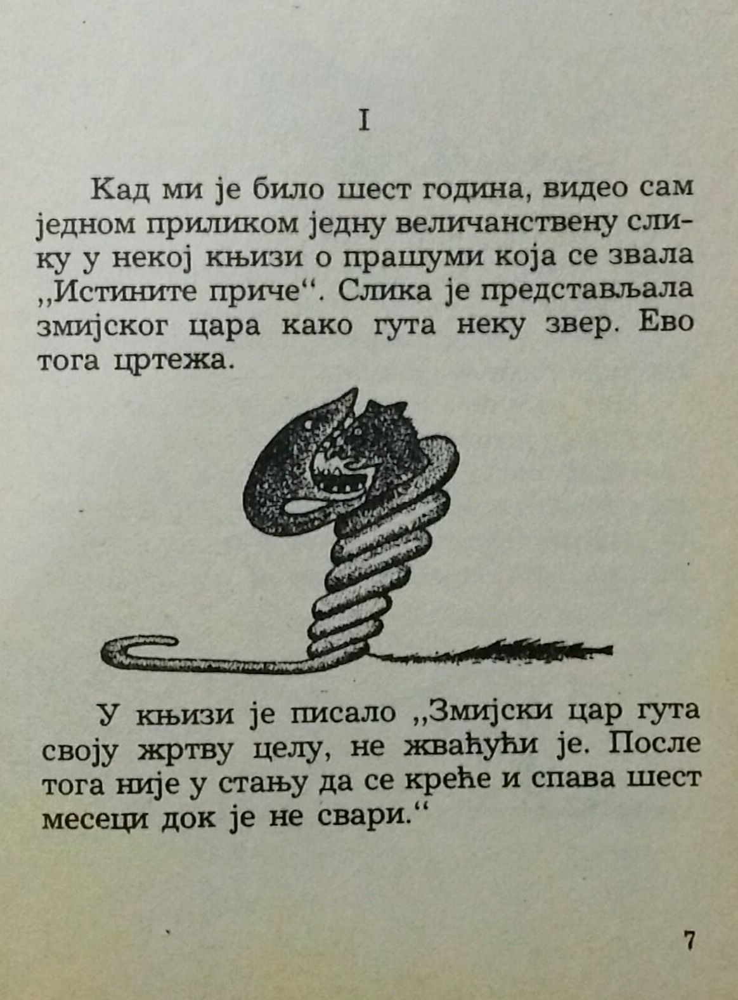 | ||
| Srpski ćirilica | Serbian cyrilic | Мали принц | 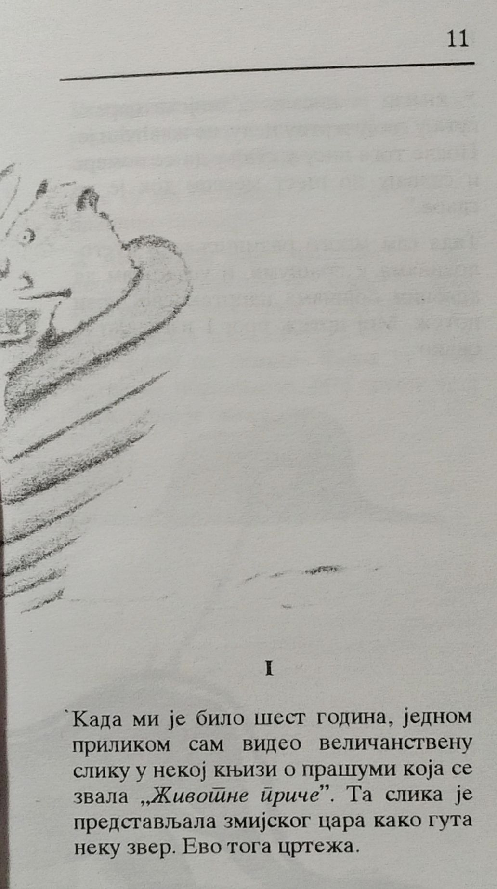 | ||
| Srpski latinica | Augmented reality | Mali princ AR | |
|
|
| Arapski jezik | Arabic language | شازده کوچولو | 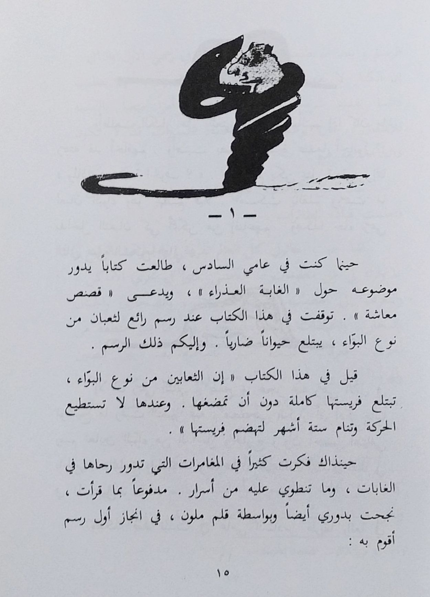 | ||
| Baškirski jezik | Bashkir language | Бәләкәй шаһзат | |||
| Bosanski jezik | Bosnian language | Mali princ | |||
| Brazilski portugalski jezik | Brazilian Portuguese language | O Pequeno Príncipe | |||
| Bugarski jezik | Bulgarian language | Малкия принц | |
|
|
| Bugarski jezik | Bulgarian language | Малкия принц | |
|
|
| Burmanski jezik | Burmese language | မင်းသားသေ | |||
| Chavakano jezik | Chavacano language | El Diutay principe | |||
| Čečenski jezik | Chechen language | Жима Эла | |||
| Češki jezik | Czech language | Malý princ | 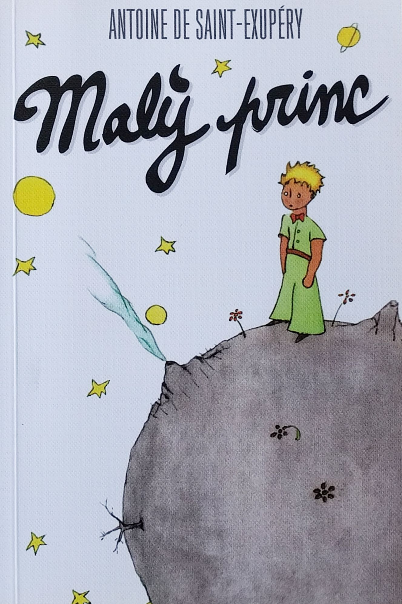 | |
|
| Češki jezik | Czech language | Malý princ | |||
| Engleski jezik | English language | The Little prince | |||
| Staroengleski jezik | Anglo-Saxon runes | Be þam Lẏtlan Æþelinge | |||
| Esperanto | Esperanto | La Eta Princo | 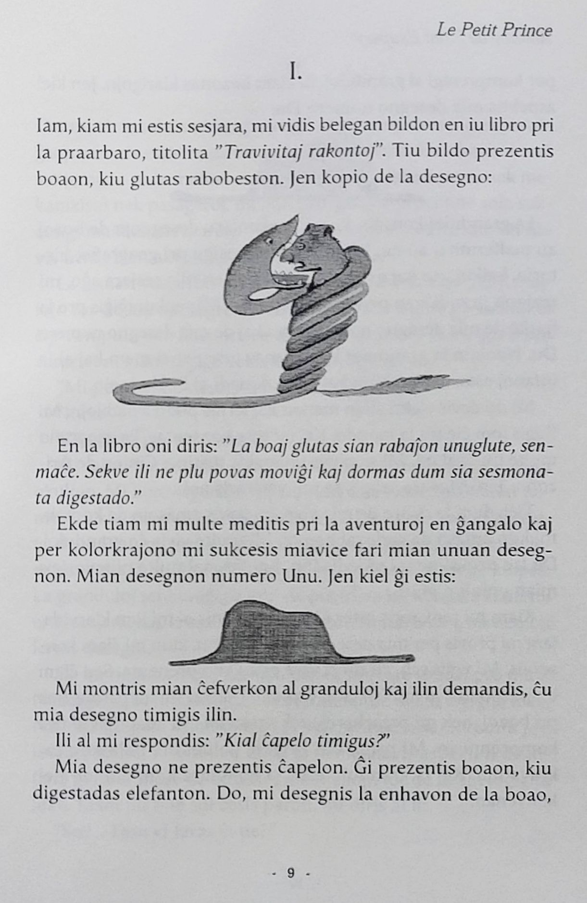 | ||
| Francuski jezik | French language | Le Petit prince | 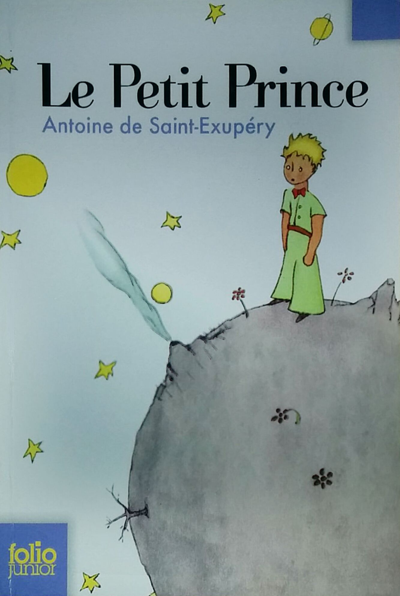 | ||
| Starofrancuski jezik | Old French language | Li Juenes Princes | |||
| Filipinski Bikol jezik | Filipino Bikol Language | An Sadit na Prinsipe | |||
| Filipinski Tagalog jezik | Filipino Tagalog language | Ang Munting Prinsipe | |||
| Grčki jezik | Greek language | Ο μικρός πρίγκιπας | |||
| Starogrčki jezik | Ancient Greek language | Τὸ βασιλείδιον | |||
| Gvarani jezik | Guarani language | Principe'i | |
||
| Haustek jezik | Haustec language | An Chikam Principe | |||
| Hebrejski jezik | Hebrew language | הנסיך הקטן | |||
| Hindi jezik | Hindi language | छोटा राजकुमार | |||
| Holandski jezik | Dutch language | De kleine prins | |||
| Hrvatski jezik | Croatian language | Mali princ | |||
| Hrvatski kajkavski jezik | Kajkavian | Mali Kralevič | |||
| Italijanski jezik | Italian language | Il Piccolo Principe | |||
| Italijanski, Milanski dijalekt | Italian, Milanese dialect | El princip Piscinin | |
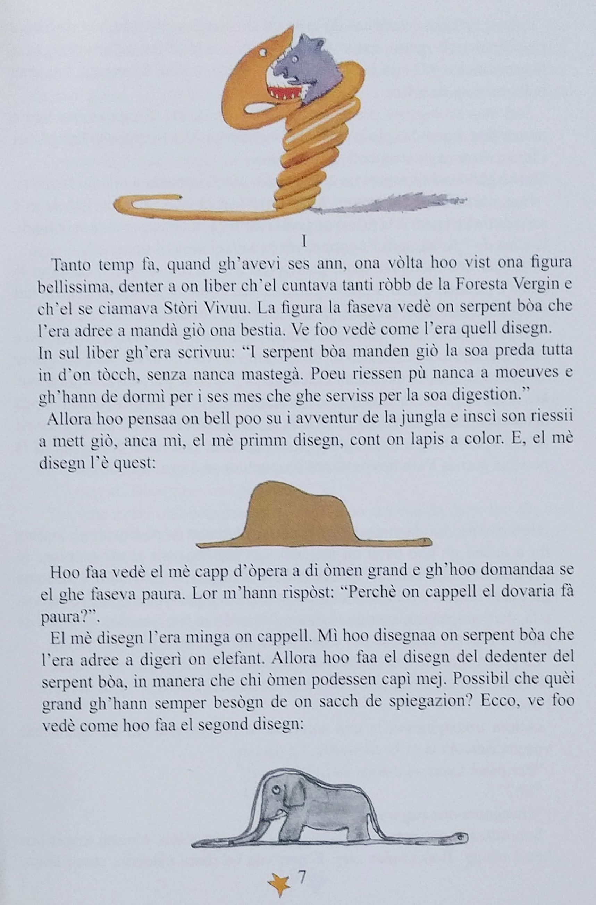 | |
| Japanski jezik | Japanese language | 星の王子さま | |||
| Kabardinski jezik | Kabardian language | Пщы Нэнау | 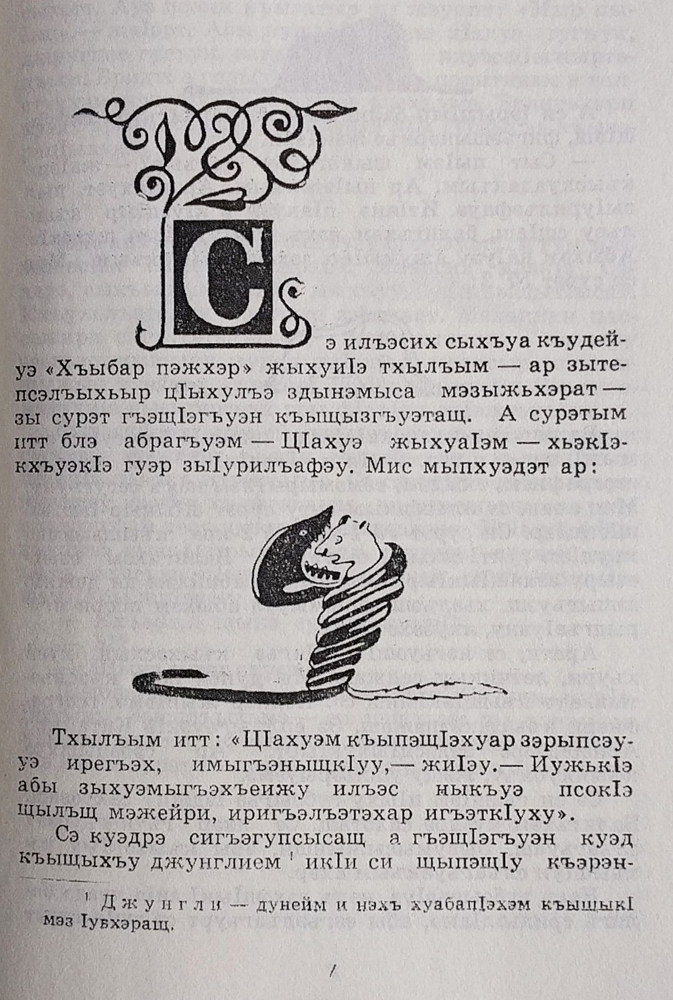 | ||
| Kazaški jezik | Kazakh language | Кішкентай ханзада | 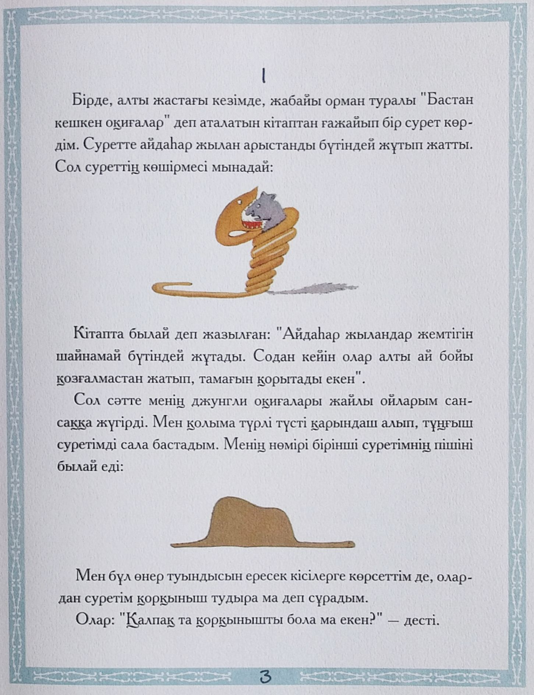 | ||
| Katalonski jezik | Catalan language | El petit príncep | |||
| Kineski jezik | Chinese language | 小王子 | |||
| Kirgiski jezik | Kyrgyz language | Кичинекей Ханзада | |||
| Kmerski jezik | Khmer language | ព្រះអង្គម្ឆាស់តូច | |
|
|
| Kurdski jezik | Kurdish language | Mirzaye Piçük | |||
| Latinski jezik | Latin language | Principulus | |||
| Letonski jezik | Latvian language | Mazais princis | |||
| Libanski arapski jezik | Lebanese Arabic language | الأمير الزغير | |
||
| Litvanski jezik | Lithuanian language | Mažasis princas | |||
| Mađarski jezik | Hungarian language | A Kis herceg | |||
| Makedonski jezik | Macedonian language | Малиот принц | |||
| Malteški jezik | Maltese language | Iċ-Ċkejken Prinċep | |||
| Moliški dijalekt | Molise dialect | Ru Prengeparielle | |||
| Navatl ili Astečki jezik | Nahuatl language | In Piltlajtoanpili | |||
| Nemački jezik | German language | Der kleine Prinz | |||
| Nepalski jezik | Nepali language | फुच्चे राजकुमार | |||
| Osmanski turski jezik | Ottoman Turkish language | كوچوك پره نس | |||
| Poljski jezik | Polish language | Mały Książę | |||
| Prekomurski jezik | Prekmurje Slovene language | Mali kralič | |||
| Radžastani jezik | Rajasthani language | नैनो राजकंवर | |||
| Romski jezik | Romani language | O cino krajoro | |||
| Rumunski jezik | Romanian language | Micul prinţ | |||
| Ruski jezik | Russian language | Маленький принц | 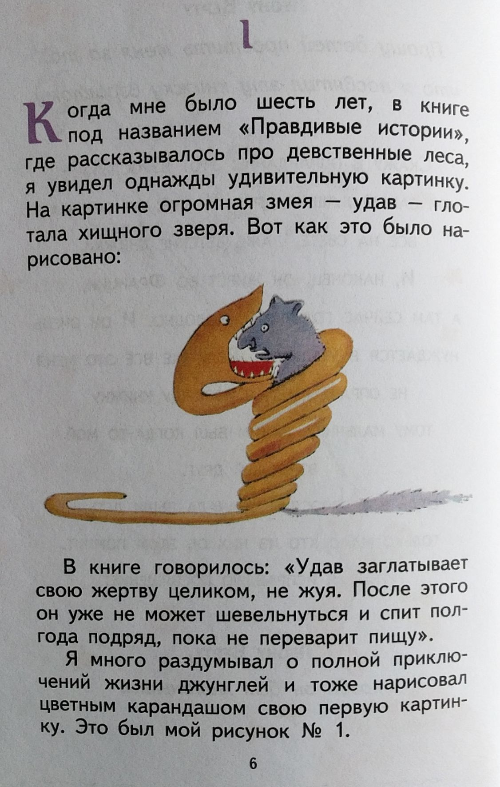 | ||
| Sanskrit | Sanskrit | कनीयान् राजकुमारः | |||
| Slovački jezik | Slovak language | Malý princ | |||
| Slovenački jezik | Slovene language | Mali princ | |||
| Staroegipatski jezik | Egyptian language | ||||
| Svahili jezik | Swahili language | Mwana Mdaga wa Mfalme | |||
| Španski jezik | Spanish language | El Principito | |||
| Švedski jezik | Swedish language | Lille prinsen | |||
| Tajlandski jezik | Thai language | เจ้าชายน้อย | |||
| Tajlandski jezik | Thai language | เจ้าชายน้อย | |
|
|
| Tatarski jezik | Tatar language | Нәни принц | 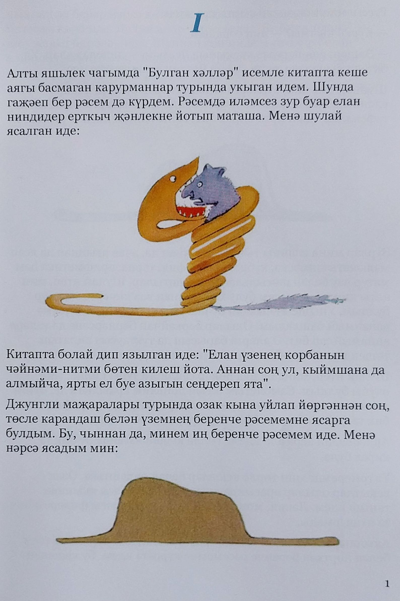 | ||
| Tibetanski jezik | Standard Tibetan language | རྒྱལ་སྲས་ཆུང་ངུ་། | 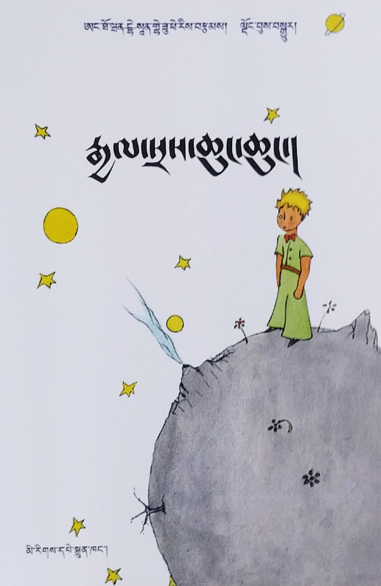 | ||
| Toba jezik | Toba Qom language | So Shiỹaxauolec nta'a | |||
| Totonački jezik | Sierra Totonac language | Xa’ púxku’ a’ktsú qa’wa’sa | |||
| Tuareški jezik | Tuareg languages | ⴴⵟⵀⵍ | 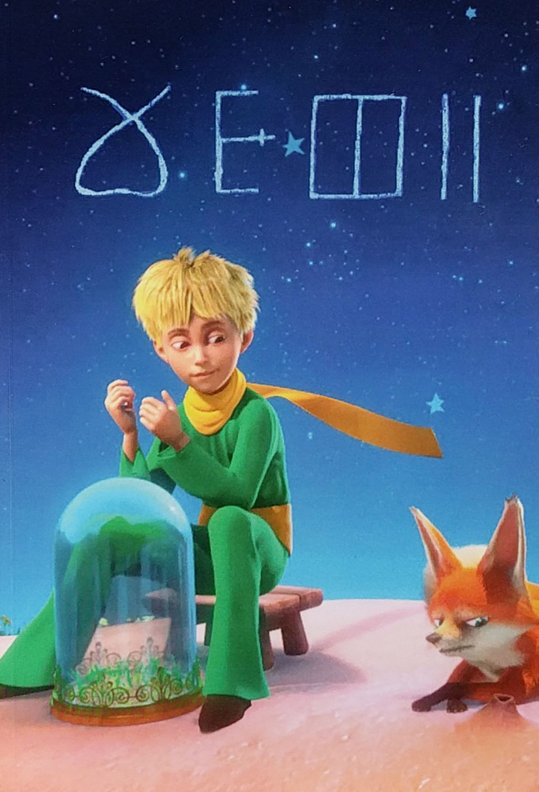 | 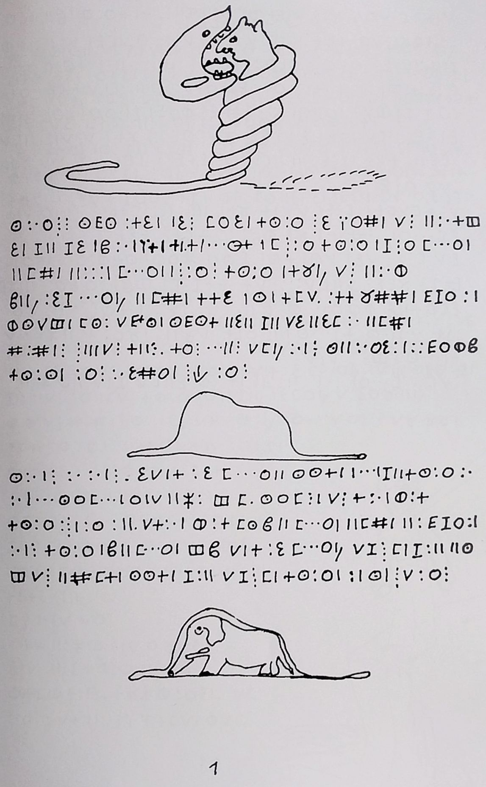 | |
| Turkmenski jezik | Turkmen language | Kiçijik Şazada | 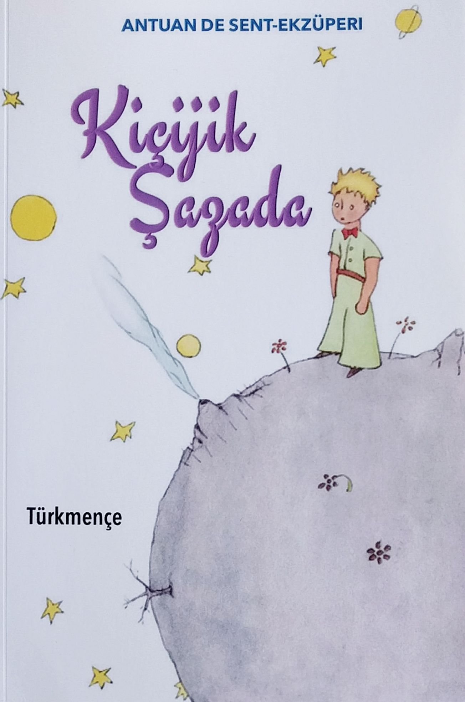 | 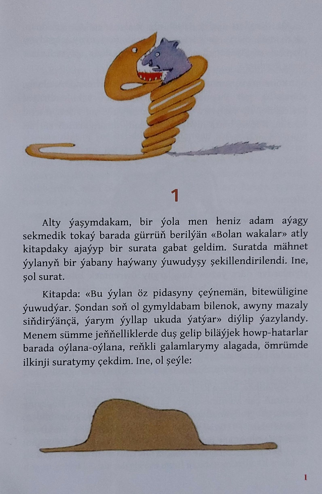 | |
| Turski jezik | Turkish language | Küçük prens | |||
| Turski jezik | Turkish language | Küçük prens | |||
| Uzbečki jezik ćirilica | Uzbek language | Кичкина Шаҳзода | |||
| Uzbečki jezik latinica | Uzbek language | Kichkina Shahzoda | |||
| Vijetnamski jezik | Vietnamese language | Hoàng Tử Bé | 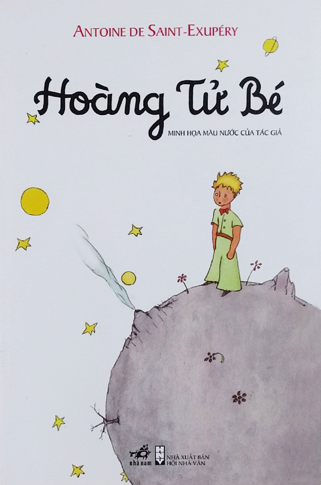 | 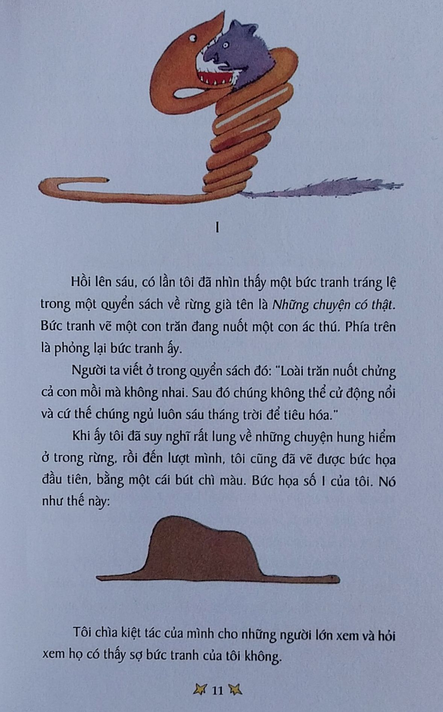 |